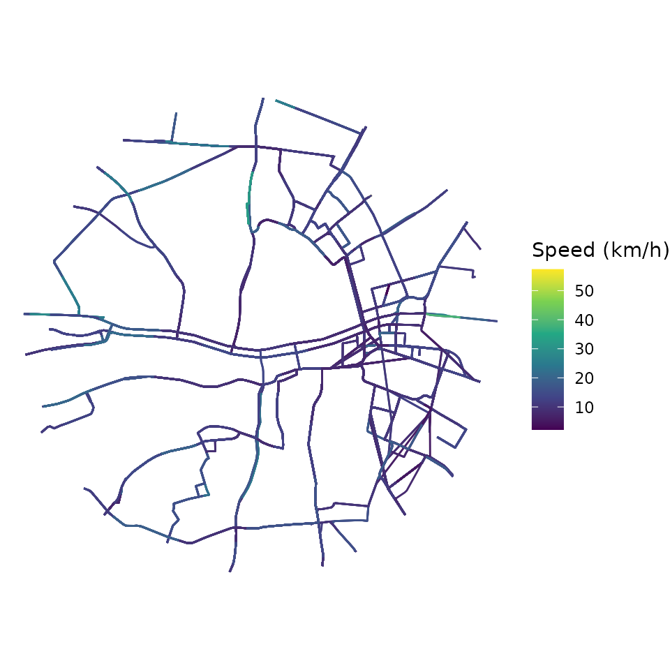
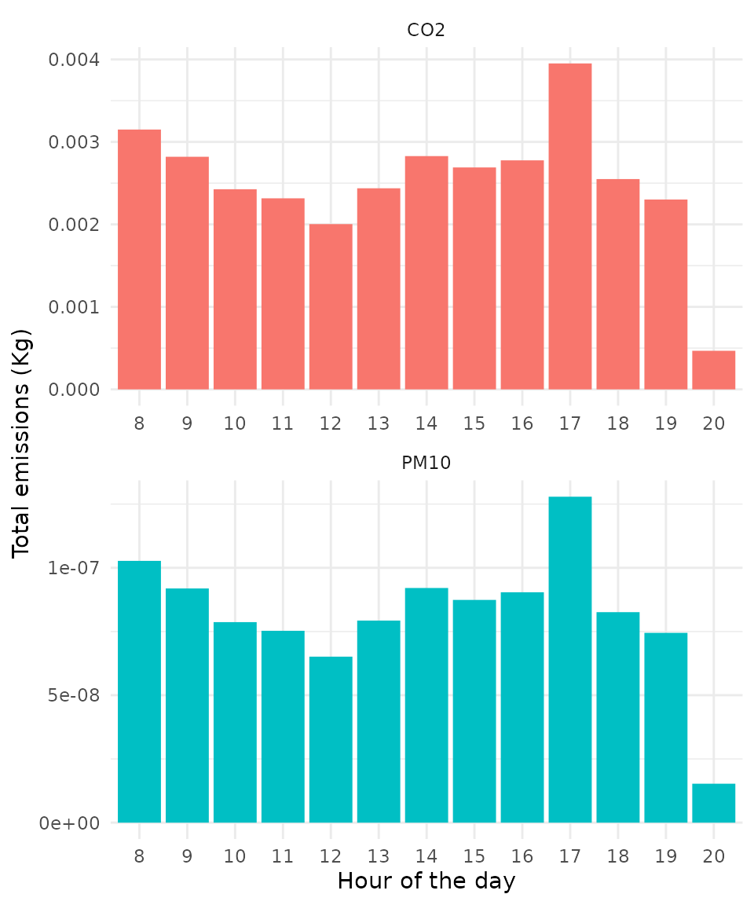
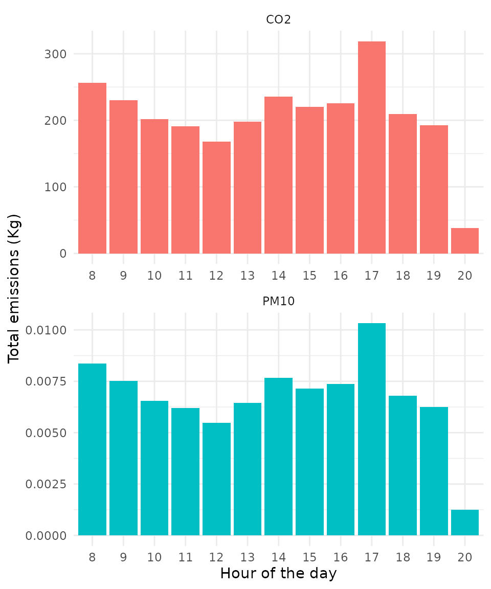
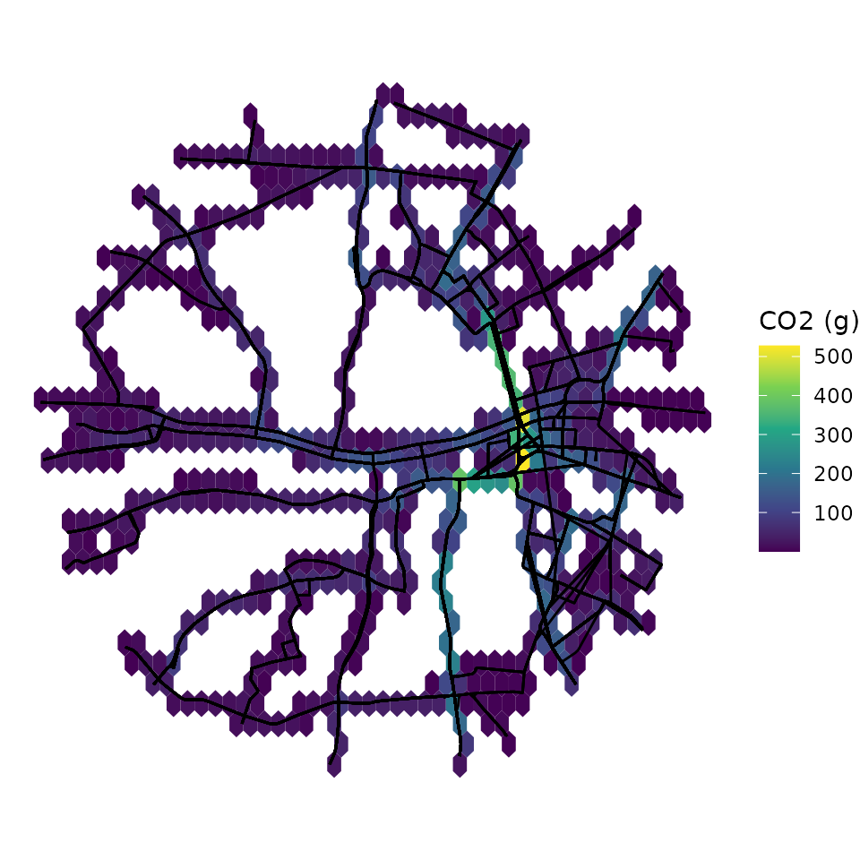

vignettes/gtfs2emis_intro_vignette.Rmd
gtfs2emis_intro_vignette.RmdAbstract
gtfs2emis is an R package to estimate public transport emissions using data in the General Transit Feed Specification (GTFS) format. The package allows users to estimate the emission levels of several types of pollutants for each public transport vehicle/trip/route at high spatial and temporal resolutions simply using a GTFS feed and some information on fleet characteristics.
gtfs2emis is an R package to estimate hot exhaust emissions of public transport vehicles using data in the General Transit Feed Specification (GTFS) format. The package allows users to estimate the emission levels of several types of pollutants for each public transport vehicle/trip/route at high spatial and temporal resolutions simply using a GTFS feed and some information on fleet characteristics. This vignette introduces the main functions of the gtfs2emis package and shows a step-by-step reproducible example of how to use the package.
One can install the development version gtfs2emis from Github:
# From CRAN
install.packages("gtfs2emis")
# Dev. version with latest features
# install.packages("remotes")
remotes::install_github("ipeaGIT/gtfs2emis")A few sample of GTFS and fleet files are included in the package:
data_path <- system.file("extdata", package = "gtfs2emis")
list.files(data_path)
#> [1] "bra_cur_fleet.txt" "bra_cur_gtfs.zip" "irl_dub_fleet.txt"
#> [4] "irl_dub_gtfs.zip" "usa_det_fleet.txt" "usa_det_gtfs.zip"bra_cur_gtfs.zip and bra_cur_fleet.txt
irl_dub_gtfs.zip and irl_dub_fleet.txt
usa_det_gtfs.zip and usa_det_fleet.txt
To estimate the emission levels from a given public transport system, users need to:
GTFS.zip filedata.frame with a few characteristics of the public transport fleet (such as age, vehicle type and fuel)Before we start, let’s load a few packages we’ll be using in this vignette:
library(gtfs2emis)
library(gtfstools)
library(progressr)
library(data.table)
library(ggplot2)
library(units)
library(sf)The gtfs2emis package has two core functions:
transport_model(). This function converts GTFS data into a GPS-like data.table with the space-time positions and speeds of public transport vehicles.emission_model(). This function estimates hot-exhaust emissions based on four inputs:
transport_model();string indicating which emission factor model should be considered;string indicating which pollutants should be estimated; anddata.frame with info on fleet characteristics passed by the user. The function returns a list with the estimated amount of each pollutant emitted by public transport vehicles.To help users analyze the output from emission_model(), the gtfs2emis package has few functions:
emis_summary() to aggregate emission estimates by time of the day, vehicle type or road segment.emis_grid() to spatially aggregate emission estimates using any custom spatial grid or polygons.emis_to_dt() to convert the output of emission_model() from list to data.table.In this introductory vignette, we show a very simple case study using default parameters of the gtfs2emis package and where we assume that fleet characteristics are homogeneously distributed across the public transport routes. For advanced users, we have written another vignette that demonstrates how gtfs2emis allows one to allocate specific vehicles into predefined routes, fix speeds and boarding times in the transport model, and adjust emissions factors. We have also written a separate vignette to help users build the data.frame with information on fleet characteristics.
To demonstrate how the gtfs2emis package works, we will be using a small sample data for the city of Dublin, Ireland. In this example, we’ll be estimating NOx and PM10 emissions of bus services on business days.
The first step is to generate the transport model using transport_model{gtfs2emis}. This function converts GTFS data into a GPS-like data.table, transforming the output into a sf-linestring, which is the required input for emissions estimates. The user can input either a string with the file path where the a gtfs.zip file is stored, or an object of class "gtfs" "list", generated with gtfstools::read_gtfs().
First, let’s read the GTFS data and filter only the transport services that run on
# path to GTFS.zip file
gtfs_file <- system.file("extdata/irl_dub_gtfs.zip", package = "gtfs2emis")
# read GTFS
gtfs <- gtfstools::read_gtfs(gtfs_file)
# Keep Monday services GTFS
gtfs <- gtfstools::filter_by_weekday(gtfs,
weekday = c('saturday', 'sunday'),
keep = FALSE)Now let’s generate the transport model. This is the most time consuming part. If you want to, you can set a progress bar by calling the transport_model() function within progressr::with_progress(), as shown below.
# generate transport model
progressr::with_progress(
tp_model <- transport_model(gtfs_data = gtfs,
min_speed = 2,
max_speed = 80,
spatial_resolution = 100,
parallel = TRUE)
)
head(tp_model)
#> Simple feature collection with 6 features and 14 fields
#> Geometry type: LINESTRING
#> Dimension: XY
#> Bounding box: xmin: -6.265914 ymin: 53.34591 xmax: -6.25602 ymax: 53.36229
#> CRS: EPSG:4326
#> shape_id trip_id route_type timestamp stop_sequence
#> 1 60-1-b12-1.1.O 6264.2.60-1-b12-1.1.O 3 13:00:56 18
#> 2 60-1-b12-1.1.O 6264.2.60-1-b12-1.1.O 3 13:02:33 19
#> 3 60-1-b12-1.1.O 6264.2.60-1-b12-1.1.O 3 13:04:02 20
#> 4 60-1-b12-1.1.O 6264.2.60-1-b12-1.1.O 3 13:04:51 21
#> 5 60-1-b12-1.1.O 6264.2.60-1-b12-1.1.O 3 13:07:39 22
#> 6 60-1-b12-1.1.O 6264.2.60-1-b12-1.1.O 3 13:10:01 23
#> speed dist cumdist cumtime trip_number
#> 1 10.64075 [km/h] 0.2863887 [km] 286.3887 [m] 96.89161 [s] 1
#> 2 11.75273 [km/h] 0.2902288 [km] 576.6176 [m] 185.79216 [s] 1
#> 3 11.53012 [km/h] 0.1567624 [km] 733.3799 [m] 234.73741 [s] 1
#> 4 12.19731 [km/h] 0.5685717 [km] 1301.9517 [m] 402.54968 [s] 1
#> 5 14.19114 [km/h] 0.5591361 [km] 1861.0878 [m] 544.39101 [s] 1
#> 6 11.48546 [km/h] 0.4270367 [km] 2288.1245 [m] 678.24128 [s] 1
#> from_stop_id to_stop_id from_timestamp to_timestamp
#> 1 8220DB000048 8220DB000049 13:00:56 13:02:33
#> 2 8220DB000049 8220DB000051 13:02:33 13:04:02
#> 3 8220DB000051 8220DB000052 13:04:02 13:04:51
#> 4 8220DB000052 8220DB000265 13:04:51 13:07:39
#> 5 8220DB000265 8220DB000271 13:07:39 13:10:01
#> 6 8220DB000271 8220DB000340 13:10:01 13:12:15
#> geometry
#> 1 LINESTRING (-6.258882 53.36...
#> 2 LINESTRING (-6.260943 53.36...
#> 3 LINESTRING (-6.263389 53.35...
#> 4 LINESTRING (-6.26464 53.356...
#> 5 LINESTRING (-6.262147 53.35...
#> 6 LINESTRING (-6.25953 53.348...Here is how the output of the transport model looks like. In essence, it’s a trajectory data.table sf linestring with the space-time position and speed of trips segments for each single vehicle of the public transport system.
ggplot(data = tp_model) +
geom_sf(aes(color= as.numeric(speed))) +
scale_color_continuous(type = "viridis")+
labs(color = "Speed (km/h)")+
theme_void()
The next step is to prepare a data.frame with some characteristics of the public transport fleet. This can be either: - A simple table with the overall composition of the fleet. In this case, the gtfs2emis will assume that fleet is homogeneously distributed across all routes; OR - A detailed table that (1) brings info on the characteristics of each individual vehicle and, (2) tells the probability with which each vehicle type is allocated to each transport route.
In this introductory vignette, we’ll be working with a simple table that tell us the proportion of buses in Dublin according to their vehicle type, Euro standard, technology and fuel. The table looks like this:
fleet_file <- system.file("extdata/irl_dub_fleet.txt", package = "gtfs2emis")
fleet_df <- read.csv(fleet_file)
head(fleet_df)
#> veh_type euro fuel N fleet_composition tech
#> 1 Ubus Std 15 - 18 t III D 10 0.00998004 -
#> 2 Ubus Std 15 - 18 t IV D 296 0.29540918 SCR
#> 3 Ubus Std 15 - 18 t V D 148 0.14770459 SCR
#> 4 Ubus Std 15 - 18 t VI D 548 0.54690619 DPF+SCRPlease note different emission factor models may require different information and that the fleet data.frame needs to be organized accordingly. In our current example for the city of Dublin, the fleet data must include certain columns with the fleet characteristics that are used in the Emep-EEA emission factor model: vehicle type, Euro standard, technology and fuel. To check which columns and sets of vehicle characteristics are required by a given emission factor model, check the fleet data vignette.
In the final step, we use the emission_model{gtfs2emis} function to estimate hot exhaust emissions of our public transport system. Here, the user needs to pass the results from transport_model(), some fleet data as described above, and select which emission factor model and pollutants should be considered. The emission_model() outputs a list with several vectors and data.frames with emission estimates and related information such as vehicle variables (fuel, age, tech, euro, fleet_composition), travel variables (slope, load, gps) or pollution (EF, emi).
[BAZZO 666] acho q essa ultima frase texto pode ficar mais clara.
emi_list <- emission_model(tp_model = tp_model,
ef_model = "ef_europe_emep",
fleet_data = fleet_df,
pollutant = c("CO2","PM10"),
reference_year = 2020
)
names(emi_list)
#> [1] "pollutant" "veh_type" "euro"
#> [4] "fuel" "tech" "slope"
#> [7] "load" "speed" "EF"
#> [10] "emi" "fleet_composition" "tp_model"Sometimes, working with data stored in a long list can be tricky. For convenience, gtfs2emis package has a few functions to users analyze the these results and make. For example, you can use the emis_to_dt() function to convert the output of emission_model() from a list to a data.table format:
emi_dt <- emis_to_dt(emi_list = emi_list,
veh_vars = c("veh_type", "euro", "fuel"),
pol_vars = "pollutant"
)
head(emi_dt)
#> veh_type euro fuel pollutant emi segment_id
#> 1: Ubus Std 15 - 18 t III D CO2 4.465969 [g] 1
#> 2: Ubus Std 15 - 18 t III D CO2 4.350602 [g] 2
#> 3: Ubus Std 15 - 18 t III D CO2 2.349907 [g] 3
#> 4: Ubus Std 15 - 18 t III D CO2 8.523031 [g] 4
#> 5: Ubus Std 15 - 18 t III D CO2 7.769610 [g] 5
#> 6: Ubus Std 15 - 18 t III D CO2 6.659245 [g] 6Alternatively, the emis_summary() function helps users summarize emission estimates, aggregating emissions by pollutant, time of the day, vehicle or road segment (spatial).
emi_by_pol <- emis_summary(emi_list = emi_list,
by = "pollutant")
emi_by_pol
#> pollutant emi
#> 1: CO2 2.685654e+06 [g]
#> 2: PM10 8.732673e+01 [g]The emis_summary() function help users summarize emission estimates by either veh_type, pollutant, or time. Using this function, users can easily:
emi_by_veh <- emis_summary(emi_list = emi_list,
by = "vehicle")
head(emi_by_veh)
#> veh_type pollutant emi
#> 1: Ubus Std 15 - 18 t CO2 2.685654e+06 [g]
#> 2: Ubus Std 15 - 18 t PM10 8.732673e+01 [g]It is also possible to summarize emission estimates by other vehicle characteristics AND pollutant.
emi_by_veh <- emis_summary(emi_list = emi_list,
by = "vehicle",
veh_vars = c("veh_type","euro"))
head(emi_by_veh)
#> veh_type euro pollutant emi
#> 1: Ubus Std 15 - 18 t III CO2 3.124742e+04 [g]
#> 2: Ubus Std 15 - 18 t IV CO2 8.889753e+05 [g]
#> 3: Ubus Std 15 - 18 t V CO2 3.637575e+05 [g]
#> 4: Ubus Std 15 - 18 t VI CO2 1.401674e+06 [g]
#> 5: Ubus Std 15 - 18 t III PM10 6.369830e+00 [g]
#> 6: Ubus Std 15 - 18 t IV PM10 4.237565e+01 [g]
# plot
ggplot(data = emi_by_veh) +
geom_col(aes(x = euro, y = as.numeric(emi/1000), fill = pollutant),
color=NA, show.legend = FALSE) +
labs(y="Total emissions (Kg)", x="Euro standard") +
facet_wrap(~pollutant, scales = "free", nrow = 2) +
theme_minimal()
emi_by_time <- emis_summary(emi_list = emi_list,
by = "time")
head(emi_by_time)
#> timestamp_hour pollutant emi
#> 1: 13 CO2 197791.4 [g]
#> 2: 14 CO2 235187.9 [g]
#> 3: 15 CO2 219913.4 [g]
#> 4: 16 CO2 225923.6 [g]
#> 5: 17 CO2 318723.4 [g]
#> 6: 18 CO2 209437.0 [g]
# plot
ggplot(data = emi_by_time) +
geom_col(aes(x = factor(timestamp_hour), y = as.numeric(emi/1000), fill = pollutant),
color=NA, show.legend = FALSE) +
labs(y="Total emissions (Kg)", x="Hour of the day") +
facet_wrap(~pollutant, scales = "free", nrow = 2) +
theme_minimal()
Finally, users can analyze how public transport emissions are spatially distributed. To do this, the emis_grid() function helps aggregate emission estimates over any custom spatial vector data (sf POLYGON).
Let’s create a regular hexagonal grid for this example.
# create spatial grid
mygrid <- sf::st_make_grid(
x = sf::st_make_valid(emi_list$tp_model)
, cellsize = 0.25 / 200
, crs= 4326
, what = "polygons"
, square = FALSE)
ggplot() +
geom_sf(data=mygrid) +
theme_void()
mygrid_emi <- emis_grid(emi_list, mygrid,time_resolution = "day"
,quiet = FALSE)
ggplot() +
geom_sf(data = mygrid_emi, aes(fill= as.numeric(CO2_Euro_III)), color=NA) +
geom_sf(data = emi_list$tp_model$geometry,color = "black")+
scale_fill_continuous(type = "viridis")+
labs(fill = "CO2 (g)")+
theme_void()
The gtfs2gps package is developed by a team at the Institute for Applied Economic Research (Ipea) with collaboration from the National Institute for Space Research (INPE), both from Brazil. If you have any suggestions or want to report an error, please visit the package GitHub page.